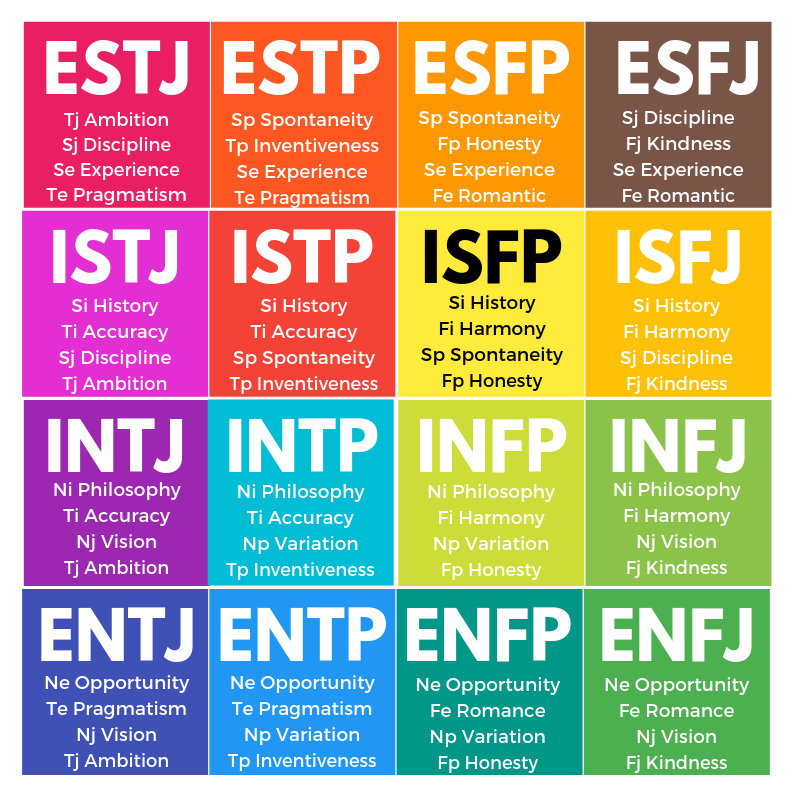

MBTI(Myers-Briggs Type Indicator)는 C.G.Jung의 심리유형론을 근거로 하여 Katharine Cook Briggs와 Isabel Briggs Myers가 보다 쉽고 일상생활에 유용하게 활용할 수 있도록 고안한 자기보고식 성격유형지표이다.
융의 심리유형론은 인간행동이 그 다양성으로 인해 종잡을 수 없는 것 같이 보여도, 사실은 아주 질서정연하고 일관된 경향이 있다는 데서 출발하였다. 그리고 인간행동의 다양성은 개인이 인식(Perception)하고 판단(Judgement)하는 특징이 다르기 때문이라고 보았다.